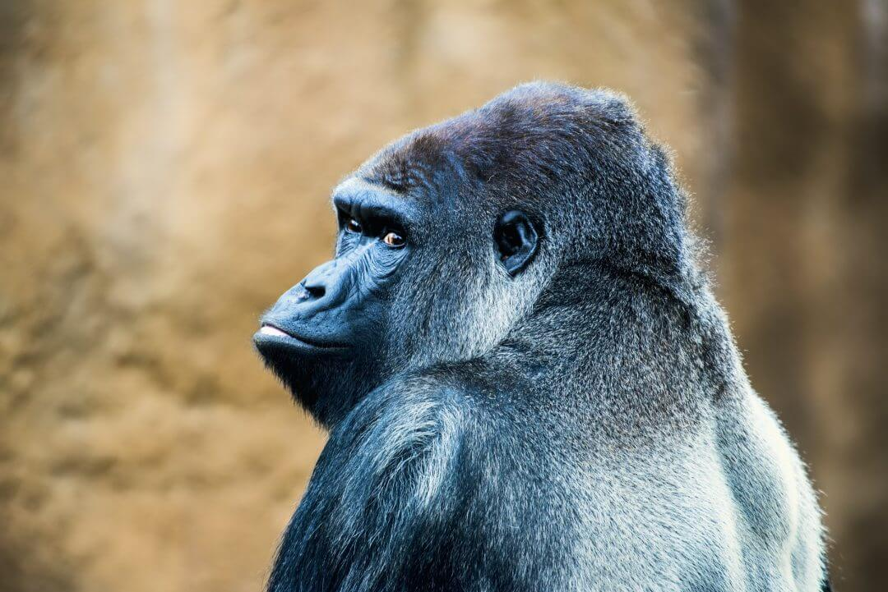
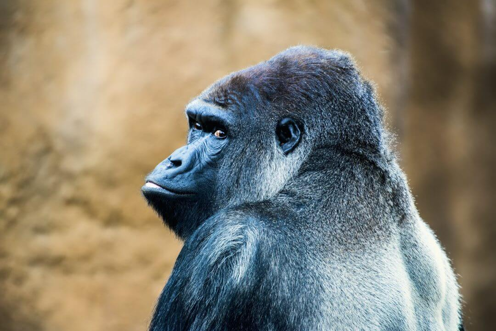

Azijski slon
Azijski slon je jedna od najvećih i najinteligentnijih životinjskih vrsta u zoološkim vrtovima. Imaju karakteristične velike uši koje koriste za hlađenje tijela, a koža im je prekrivena sitnim naborima. U zoološkom vrtu, slonovi se obično hrane sijenom, voćem i povrćem, a njihove aktivnosti uključuju plivanje u bazenima i šetnje u okruženju koje imitira njihovo prirodno stanište.


 
